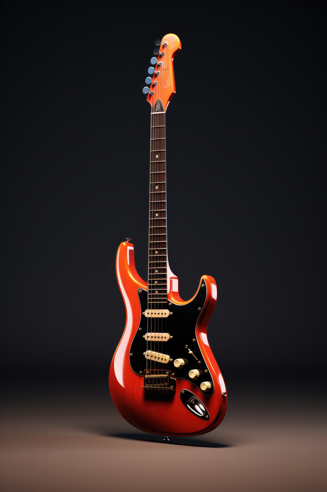

A alma da música em madeira.
Instrumentos de luthieria com timbres únicos e acabamento amadeirado premium.


Acusticos de Alta
Perfomance
Madeiras nobres selecionadas para garantir o melhor sustain e uma estética clássica. Guitarras de corpo sólido são instrumentos elétricos sem cavidades internas de ressonância, projetados para minimizar o feedback (microfonia) e maximizar o sustain. Com corpos geralmente em madeiras densas (Alder, Mogno, Basswood), são ideais para volumes altos e distorções, sendo a base de marcas como Fender (Telecaster/Stratocaster) e Gibson (Les Paul/SG).

Acústicos de Alta Performance
O calor do som acústico com a precisão da construção feita à mão.